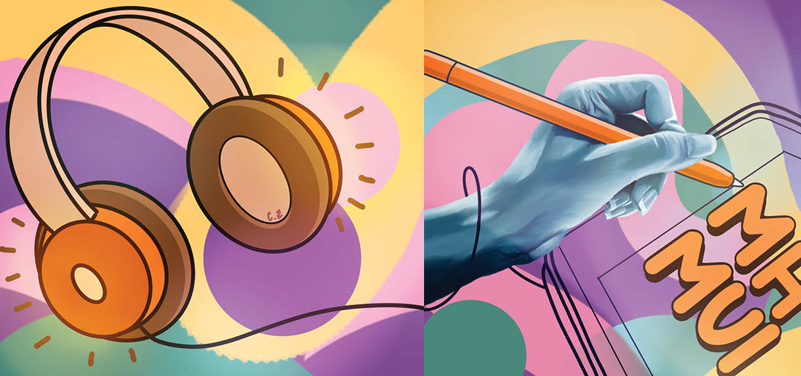

A CD cover design visualizing how music transforms stress into focus and enjoyment during work.

Medium: Digital Media
Size: 8 × 17 in
Software: Procreate, Adobe InDesign
My Happy MUSIC is a CD cover design inspired by the emotional shift I experience when listening to my YouTube playlist while working on assignments. The project explores the contrast between stress and joy, and how music transforms my mindset during focused tasks.
The front cover features a realistic illustration of my left hand working with an Apple Pencil, rendered in a dark blue color palette to convey stress and mental pressure. This drawing was based on a reference photo I took. The subdued tones reflect the emotional weight of completing assignments without music.
In contrast, the back cover presents a cartoon-style illustration of headphones playing music. The bright, colorful background represents the uplifting energy that music brings. The headphone wires wrap around the arm from the front cover, visually connecting the two sides and symbolizing how music reshapes the emotional experience of working.
The title “MH MUSIC” references my personal playlist. The illustrations were created in Procreate using round and flat brushes on an iPad with Apple Pencil, and the final CD layout was assembled in Adobe InDesign.